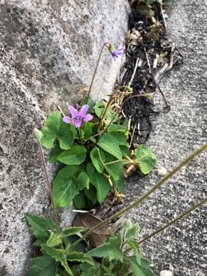
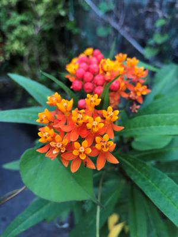

うるがいの話 ある日
最新: リモート【うるがいの話 ある日】とは 一日だけのプログです
『うるがいの話』の最新一日だけのプログで、通信料が少なく経済的だ。カニの画像をクリックすると全ての日付が載る『うるがいの話』サイトを表示します
|
|
【うるがいの話】 うるがい(ｳﾙｶﾞｲ urugai)とは、『もずくがに』の名前でとても大きくなります。 |
|---|---|
|
|
【カミマヤーの話】 猫のことを方言でマヤーといいます。カミマヤー（kamimayaa）とは、神の猫のことです。 |
|
【タナガーの話】 たながー（ﾀﾅｶﾞｰtanagaa）とは手長えびのことで、何種類かあり大きいのは車 エビぐらいになります。 |

|
【ぶながぁの話】 ぶながー(bunagaa)とは、赤い髪の毛、赤い身体、そして身長は１ｍ２０ｃｍ ぐらい、川の蟹を食べているの目撃された。場所は沖縄県国頭郡大宜味村のと ある村僕の隣近所に住んでいる爺さんから、聞いた話です。 |
|
|
【ギーマの話】 ギーマ(giima)とは、山原の里山に咲くスズランに似た、 花を付けます。実は食べられます、 気が付くと口の周りが紫になっています。 |
2022年01月14日 (金）リモート
18:18
 
昨日の夜（副業が対象者なので）に、ＺＯＯＭを使った説明会を受けた。一年
以上前に一回だけ就活で面談した時以来である。私一人だけだと経験済なので
特に問題ないのだが、興味を持ったヨメが一緒に視聴したいと。うーん、そも
そものきっかけはヨメなので仕方ない、とディスクトップパソコン２号のディ
スプレイをヨメ向けにノートパソコンから接続して、ヨメは私のノートパソコ
ンのカメラに映らないように考慮する。説明会に参加したのほホストの情報だ
ろうか、接続３８とあったので３８名かな。千名ぐらいの副業参加者が既にい
て、月の収入はだいたい２～３万円、多い人で１０万円とのこと。ふーん、副
業という位置づけなのでそうなのかなと納得する。質問タイムがあり、質問者
の顔が映っていたが、アイホンのスマホだった。ほー、それと離島からのリモ
ート参加者の質問もあったが、名前から本土の人かなと思った。
１８時１５分 ビットコインの総資産 ￥１４、０７０